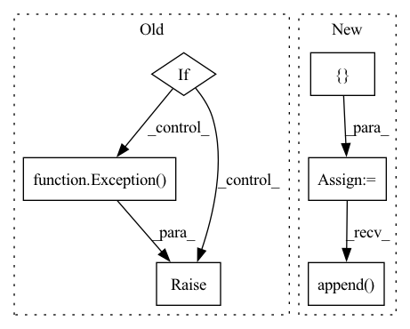

Pattern ID :4673
Before Change
ecs_client = boto3.Session(region_name=region).client("ecs")
response = ecs_client.describe_tasks(cluster=cluster_arn_or_name, tasks=[task_arn])
return_code = []
if response["failures"]:
raise Exception( f"Failures in describe tasks - {response["failures"]}")
else:
for container in response["tasks"][0]["containers"]:
return_code.append(container["exitCode"] == 0)
return all(return_code)After Change
ecs_client = boto3.Session(region_name=region).client("ecs")
response = ecs_client.describe_tasks(cluster=cluster_arn_or_name, tasks=[task_arn])
return_codes = []
if response["failures"]:
raise RuntimeError(f"Failures in describe tasks - {response["failures"]}")
for container in response["tasks"][0]["containers"]:
if container["exitCode"] != 0:
return_codes.append( {"container_arn": container["containerArn"],
"exit_code": container["exitCode"],
"reason": container["reason"]})
return return_codes
In pattern: SUPERPATTERN
Frequency: 3
Non-data size: 6
Instances Fragment ID: 16738892
Project Name: aws/deep-learning-containers
Commit Name: 57623bda331e0872913dd8dd958287a01ca8f021
Time: 2020-03-18
Author: 33526713+arjkesh@users.noreply.github.com
File Name: test/test_utils/ecs.py
M Class Name: AnonimousClass
N Class Name: AnonimousClass
M Method Name: describe_ecs_task_exit_status(3)
N Method Name: describe_ecs_task_exit_status(3)
M Parent Class:
N Parent Class:
M File Name: test/test_utils/ecs.py
N File Name: test/test_utils/ecs.py
M Start Line: 454
M End Line: 469
N Start Line: 475
N End Line: 486
Before Change
image = objects[0]
objects = objects[1].split("\"")
if 1 < len(objects):
if len(objects) % 2:
captions = [objects[2 * i + 1]
for i in range(int(len(objects) / 2))]
else:
raise Exception( "Line %s: unexpected number "
"of quotes in filename" % line)
else:
captions = objects[0].split()
else:
image = objects[0][:-1]After Change
objects = line.split(", ")
if len(objects) == 2:
image = objects[0]
captions = []
for caption in objects[1:]:
if caption[0] != "\"" or caption[-1] != "\"":
log.warning("Line %s: unexpected number "
"of quotes" % line)
else:
captions.append( caption.replace("\\", "")[1:-1])
else:
image = objects[0][:-1]
captions = []
Fragment ID: 16738889
Project Name: openvinotoolkit/datumaro
Commit Name: 551fa11a820347080aaa92b43cac2fe61f1691a6
Time: 2021-07-22
Author: kirill.sizov@intel.com
File Name: datumaro/plugins/icdar_format/extractor.py
M Class Name: _IcdarExtractor
N Class Name: _IcdarExtractor
M Method Name: _load_recognition_items(1)
N Method Name: _load_recognition_items(1)
M Parent Class: SourceExtractor
N Parent Class: SourceExtractor
M File Name: datumaro/plugins/icdar_format/extractor.py
N File Name: datumaro/plugins/icdar_format/extractor.py
M Start Line: 58
M End Line: 72
N Start Line: 59
N End Line: 70
Before Change
if min_value > prune_epoch_to_now[i] >= 0:
idx = i
min_value = prune_epoch_to_now[i]
if idx < 0:
raise Exception( "Early stop as there is not any layer to be pruned...")
return idx
After Change
soonest_layer_names.append(unpruned_layers[i]["name"])
pruning_plan_names = list(map(lambda x: x["name"], self.pruning_plan))
idxes = []
for soonest_layer_name in soonest_layer_names:
idxes.append( pruning_plan_names.index(soonest_layer_name))
return idxes
Fragment ID: 16738884
Project Name: lehduong/knowledge-distillation-by-replacing-cheap-conv
Commit Name: 7308659bcb1aa76bf8ee9ab2f42e88efb85d667c
Time: 2020-02-15
Author: oopsxilitol@gmail.com
File Name: trainer/atakdp.py
M Class Name: ATAKDPTrainer
N Class Name: ATAKDPTrainer
M Method Name: get_index_of_pruned_layer(2)
N Method Name: get_index_of_pruned_layer(2)
M Parent Class: TAKDPTrainer
N Parent Class: TAKDPTrainer
M File Name: trainer/atakdp.py
N File Name: trainer/atakdp.py
M Start Line: 204
M End Line: 213
N Start Line: 216
N End Line: 229